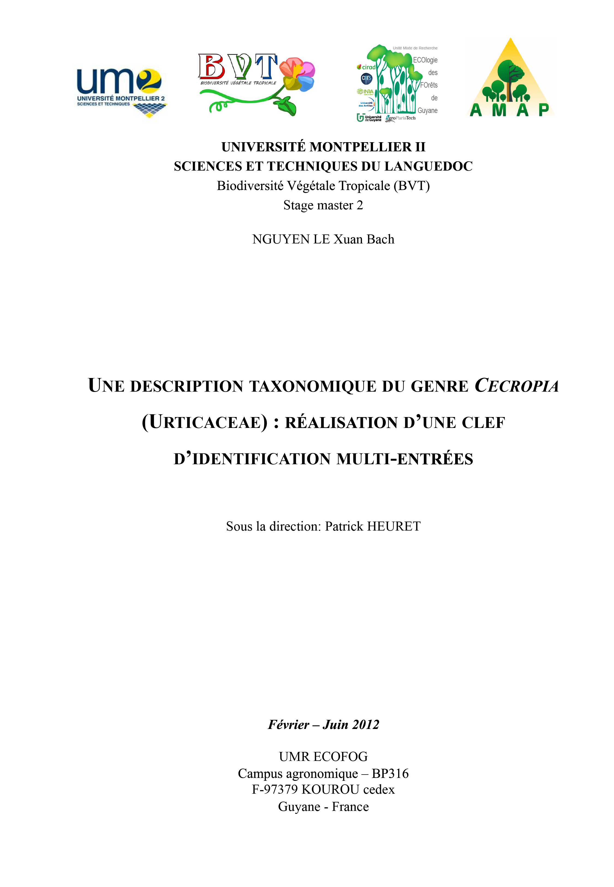

Stage Master 2
Résumé et Abstract
1
Introduction
2
Matériels et Méthodes
2.1
Construction d’une base de donnée photographique
2.2
Construction d’une base de données relatives aux échantillons d’herbiers sous le logiciel BRAHMS et édition des cartes de répartition des espèces.
2.3
Construction d’une matrice de caractère à partir de l’ouvrage de Berg et Rosselli (2005) et intégration au logiciel Xper2
2.4
Construction de la clef interactive multi-entrée sous XPER
2
, une plate-forme dédiée à l’identification assistée par ordinateur
2.5
Analyse de la matrice de caractère
2.5.1
Analyse du pouvoir discriminant des caractères morphométriques
2.5.2
Classification hiérarchique des espèces
2.6
Etude de cas en Guyane française
3
Résultat
3.1
La base de donnée de
Cecropia
3.2
Notice d’utilisation de la clef multi-entrée : l’exemple de
C. distachya
3.3
Analyse discriminante des caractères selon différents indices de dissimilarité
3.4
Comparaison des espèces via une classification ascendante hiérarchique
3.5
La diversité des espèces Guyanaise : études de cas.
4
Discussion
5
Conclusion
References
Published with bookdown
Une description taxonomique du genre
Cecropia
(Urticaceae): Réalisation d’une clef d’identification multi-entrées
Une description taxonomique du genre
Cecropia
(Urticaceae): Réalisation d’une clef d’identification multi-entrées
Nguyen Le Xuan bach
Février – Juin 2012
